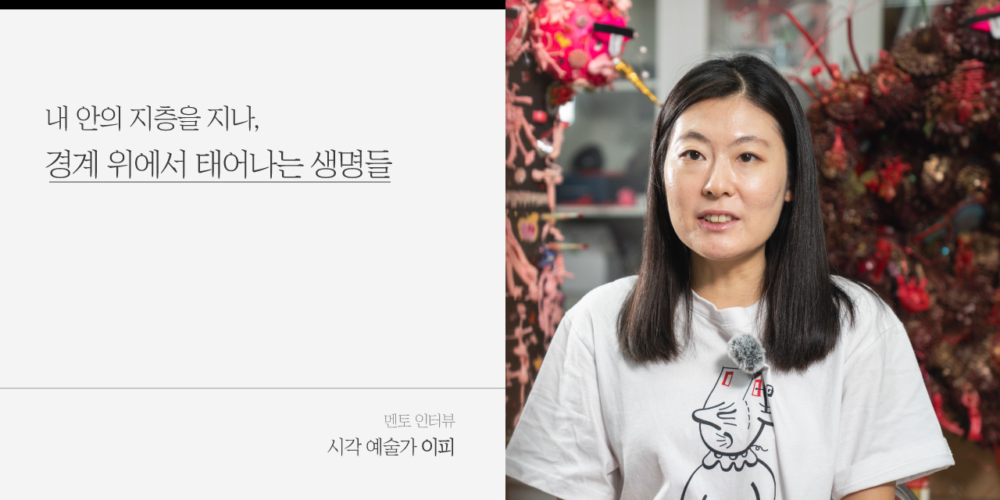
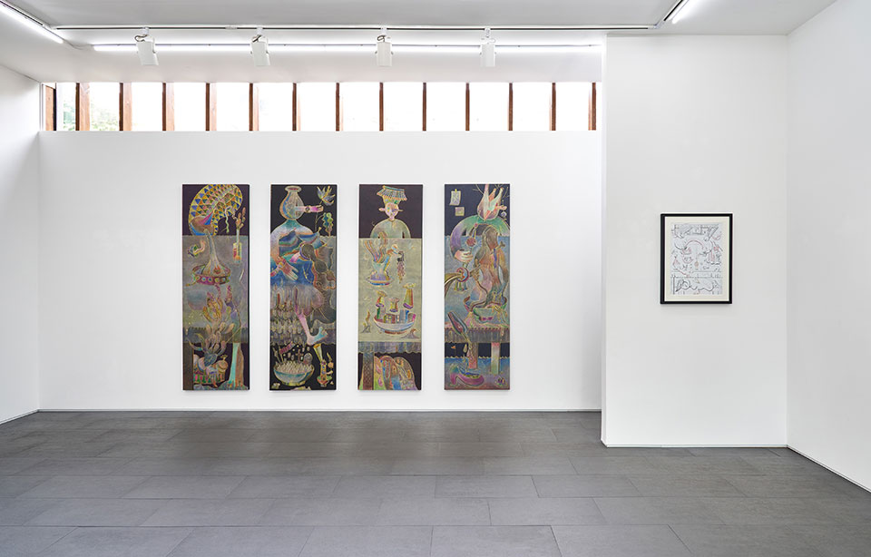
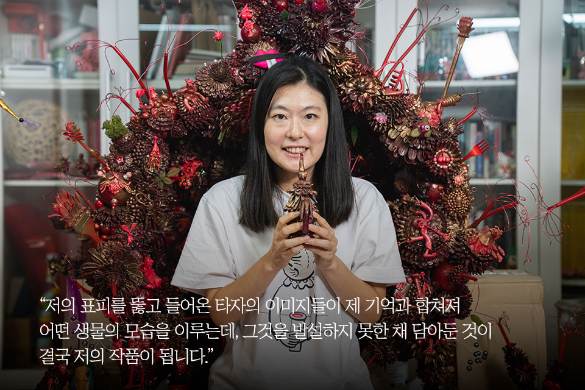
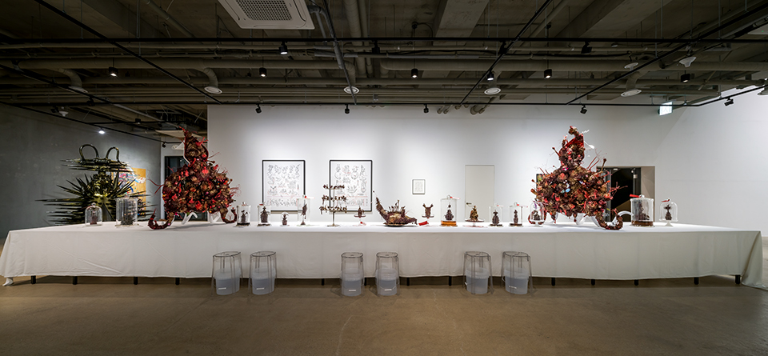
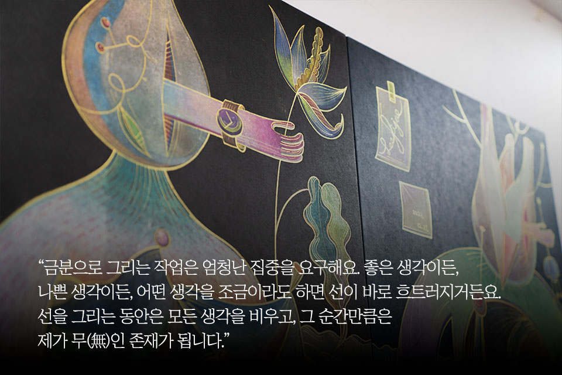
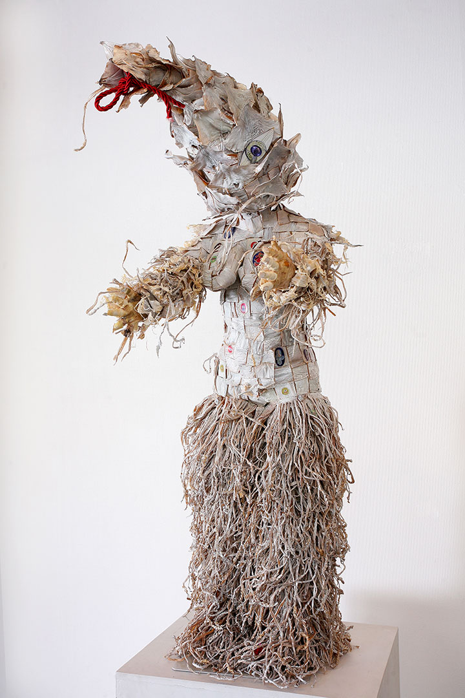
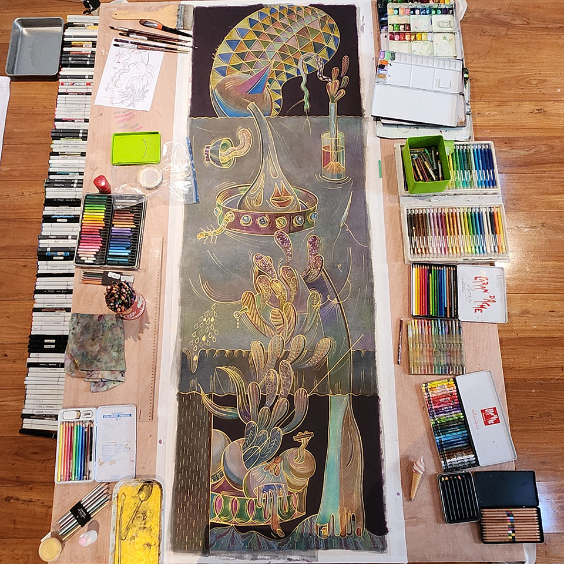
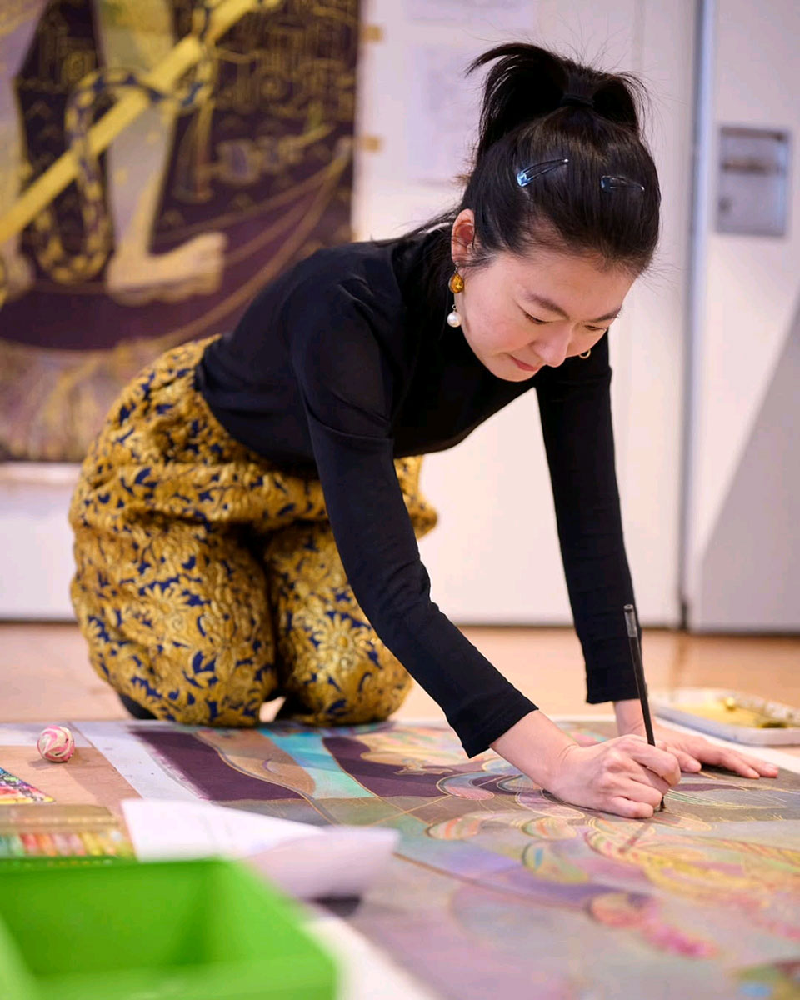

서울 성북천을 따라 난 골목의 한 작업실, 창을 타고 들어온 빛 속에서
이피 작가를 만났다. 회화와 조각, 설치를 넘나들며 자신만의 예술
세계를 확장해온 그는 한국인 최초로 ‘도로시아 태닝 상’을 수상하며
주목받았고, 이어 첫 에세이집 『이피세』를 통해 내밀한 사유와
감각의 세계를 텍스트로 다시 펼쳐 보였다. 이피 작가에게 미술은
자신을 둘러싼 시공간 자체이며, 그 안에서 자유롭게 유영하는 행위가
곧 작업이 된다. 고요한 밤이 찾아오면 그는 하루 동안 마주한 타자와
사유의 흔적을 내면화하는 시간을 살아낸다. 그리고 그 경험들은
손으로 빚고 그리는 행위를 통해 형상과 색채를 지닌 물질적 존재로
구현된다. ‘자신의 몸으로 접촉한 존재들을 그림 안에 모시는 행위’가
바로 그의 예술이다.
그의 작품은 안과 밖, 봄과 보임, 삶과 죽음, 형상과 형상 사이의
경계에 서 있는 ‘창’과도 같다. 작가가 아픔을 자처하며 만든 작품은
하나의 창이 되고, 관람객은 그 앞에서 작가가 만들어낸 바깥을
마주한다. 창을 통해 바라본 풍경은 다시 보는 이의 내면으로 흘러
들어와 또 다른 살아 있는 사물이 되고, 각자의 감각과 기억을 따라
새로운 이미지를 낳게 된다. 수많은 존재의 떨림이 교차하는 자리에서,
이피 작가의 작품은 영원히 열려 있는 창이 되어 우리를 맞이한다.

Q1. 안녕하세요, 작가님! 인터뷰에 앞서 <석유사랑> 독자분들에게 인사 부탁드립니다.
안녕하세요. 회화, 조각, 설치 작업을 하는 작가 이피입니다. 이렇게 인터뷰로 만나게 되어 감사한 마음입니다.
Q2. 먼저 ‘도로시아 태닝 상’ 수상과 책 『이피세(世)』 출간을 축하드립니다. 작가님의 근황이 궁금해요. 요즘 어떻게 지내고 계신가요?
책을 내고 나서 북토크를 두 번 진행했습니다. 이제는 다시 그림 그리는 생활로 돌아가야겠다는 생각이 들어 다음 개인전을 준비하며 그림을 그리고 있습니다. 가끔은 이 세월이 아깝게 느껴지기도 하는데요.(웃음) 요즘에는 잠자는 시간을 빼고는 거의 대부분을 작업실에서 그림을 그리며 지내고 있습니다.
Q3. ‘도로시아 태닝 상’ 수상 소식을 들으셨을 때 기분이 어떠셨나요? 한국인 최초 수상이라는 점에서도 큰 주목을 받으셨는데요. 화가이자 시인이었던 도로시아 태닝을 기리며, 독창적인 예술 세계를 구축해 나가고 있는 뛰어난 작가에게 수여되는 이 상이 작가님에게는 어떤 의미로 다가왔는지 궁금합니다.
처음에는 믿기지 않았어요. 상을 받게 되었다는 걸 처음 알았을 때,
저는 상하이 레지던시에 있었어요. 당시 메일 접속이 잘 안 돼
오랜만에 들어가 확인해 보니 “너에게 너무 좋은 소식이 있으니 이
번호로 연락을 달라”는, 매우 스팸 같아 보이는 메일이 와 있더라고요.
스팸이라고 생각하고 지웠는데, 같은 메일이 또 온 거예요. 다행히
저의 게으름 때문에 스팸함으로는 보내지 않고 계속 지우기만 했죠.
그러다 어느 날, 굉장히 긴 편지가 왔어요. 상을 수여하는 단체인 미국
현대예술재단과 도로시아 태닝 상에 대한 설명이 담긴 글이었습니다.
그 후 담당자와 연락을 주고받으면서, 이 상이 진짜로 저에게
주어진다는 걸 믿게 되었어요. 굉장히 초현실적이면서도 웃긴
해프닝이었습니다. 물론 큰 상금을 받게 된 것도 굉장히 기뻤습니다.
한국인 최초 수상이라는 사실은 제가 잘 몰랐는데, 갤러리에서
알려주셨어요. 그렇게 기사도 많이 나고, 전시나 인터뷰 기회 등으로
연락이 이어지면서 이 상이 얼마나 큰 상인지 알게 되었습니다.
뉴욕에서 열린 시상식에 참여했는데, 너무나 좋았던 점은 이 상이 정말
열심히 혼자서 작업을 해온 사람들에게 주어진다는 것이었어요.
도로시아 태닝 외에도 다른 작가의 이름을 딴 상들이 있는데, 무용가,
글 쓰는 작가 등 많이 알려지지 않았지만 묵묵히 작업을 하며 좋은
작품을 보여주고 있는 예술가에게 주는 상이라는 걸 알게 되고는 더욱
감동을 받았습니다.

숨어서 숨쉬는 작가 연합 (전시 전경), 장소 누크갤러리Q4. 지난 8월, 책 『이피세(世)』를 출간하셨습니다. 오랜 시간 작가님의 내면을 기록한 에세이와 작품들에게 보내는 편지로 구성된 이 책이 나오기까지의 이야기를 간단히 들려주실 수 있을까요?
2019년에 출판사 난다의 김민정 대표님이 제 전시를 보러 오셨어요. 그 전시가 롯데 에비뉴엘 아트홀에서 열린 <현생누대 신생대 이피세>였는데, 당시 큐레이터님이 제 글을 벽에 굉장히 많이 붙여 놓으셨거든요. 김민정 대표님이 그 글을 보시고 마음에 들어 하시면서 책을 내자고 제안하셨어요. 하지만 그때 저는 책을 내는 일이 조금 두려웠어요. 그래서 5년 넘게 미루게 되었죠. 그러다 올해 초, 다시 출간 이야기가 나왔고, 저도 이제 책을 낼 만큼 준비가 된 것 같아 이번에 책을 내게 되었습니다.
Q5. 문학 작가이신 부모님(이강백 극작가, 김혜순 시인)의 영향으로 어린 시절부터 글을 읽고 쓰는 일이 자연스러우셨다고요. 작가님에게 글과 그림은 어떤 점에서 닮아 있고, 또 어떻게 다른가요?
부모님께서 늘 글을 쓰고 계셨기 때문에, 저에게 글을 쓴다는 건
의식주만큼 당연한 일이었어요. 하지만 글을 배우기 전에 그림을 먼저
배웠습니다. 제가 아직 글을 알지 못했을 때, 옆에서 조용히 할 수
있는 놀이가 그림 그리기였거든요. 그래서 글과 그림 모두 저에겐
너무나 자연스러운 일이 되었습니다. 사실 제가 부모님의 글을 잘
읽지는 않아요. 왜냐하면 너무나 가까운 사람이잖아요. 책을 읽으면
제가 몰랐던 부분을 너무 많이 알게 되는 게 약간 불편하게
느껴지더라고요. 그래서 잘 읽지는 않지만, 어렸을 때도 제가 쓴 글이
있으면 봐주시고 의견을 주시기도 하셔서 아마 영향을 받지 않았을까
생각합니다. 집에 책이 정말 많았던 것도 큰 영향을 주었어요. 책을 안
읽을 수 없는 환경에서 늘 책을 읽으면서 지냈으니까요. 남들이 잘
읽지 않는 책들을 많이 접하면서 제 독특한 스타일이 형성된 것이
아닐까 생각합니다.
저에게 글과 그림은 서로 동떨어져 있지 않아요. 사유라는 점에서 보면
글과 그림은 같아요. 그런데 다른 점이 있다면, 그림을 그릴 때 저는
손이 가는 대로 그리거든요. 구도를 먼저 생각하지 않아도 그리면서
구도가 정해지는 자연스러운 느낌이 있어요. 그런데 글은 벽돌을 쌓고
구조에 맞춰 집을 짓는 것 같아요. 그런 점이 다른 것 같습니다.
Q6. 책 제목을 2019년 개인전 <현생누대 신생대 이피세>에서 가져오셨지요. 작가님이 만든 생물종들이 살아가는 ‘이피세’ 시대를 보여주는 일종의 자연사 박물관이라는 전시의 아이디어가 흥미로웠습니다. 이제까지 세상에 없던 것을 새로운 생물의 몸으로 탄생시키는 작가님의 작업은 어디에서 출발하나요?
제 작업은 저 ‘이피’라는 사람 안에 있는 어떤 지층에서 나오는 것 같아요. 제가 다 발설하지 못한, 제 안에 꾹꾹 담겨 있는 것들에서 시작되죠. 저의 표피를 뚫고 들어온 타자의 이미지들이 제 기억과 합쳐져 어떤 생물의 모습을 이루는데, 그것을 발설하지 못한 채 담아둔 것이 결국 저의 작품이 되는 것 같거든요. 작품의 원천은 저라는 사람에게 포커스가 맞춰져 있어요. 남을 신경쓰기보다는, 그런 시선으로부터 저를 보호하고자 하는 마음에서 나오는, 제 안의 순수한 것들이죠. 그것이 단순히 일기장에 있는 개인적인 것은 아니고, 사회나 타인, 다른 무언가의 영향을 받은 생물들이라고 할 수 있을 것 같아요.

Q7. 작가님 작품에는 ‘몸’이 선명하게 드러나는 경우가 많은 것 같습니다. 작가님은 ‘몸’을 어떻게 바라보고 계신가요?
제 몸 안에는 수많은 몸들이 살고 있어요. 우리 몸 안에는 1조 개가 넘는 미생물이 살고 있다고 하잖아요. 그런데 그 구성 요소가 사람마다 다 다르대요. 각자 너무나도 다른 몸을 가지고 있는 거죠. 지금 제 앞에도 빵이 있고 리모컨이 있고 여러 몸들이 있잖아요. 이 타자들은 우리 몸 안에 흡수되면서 우리의 기억을 입고 또 다른 몸들이 돼요. 제가 읽은 유다복음이라는 책에서는 예수가 유다에게 ‘세상에는 너무 많은 우주가 있는데, 이 우주가 가장 열등하기 때문에 내가 너희를 구원하려고 가장 좋은 우주에서 왔다’고 말해요. 우주 역시 수많은 몸을 갖고 있어요. 저의 몸은 하나의 몸이지만, 그 안에는 굉장히 많은 몸들이 있고, 그 몸들을 다 끌어내 하나의 조각으로 빚어낸 것이 바로 ‘이피세’입니다.
Q8. 2023년 개인전 <미래 생물 발굴>에서는 우리가 생명을 유지하기 위해 먹은 수많은 다른 생명체의 몸이 우리의 몸과 합쳐져 ‘미래 생물’로 나타남을 보여주셨지요. 다른 몸이 내 안에 들어와 내 몸을 이루는 데서 끝나지 않고, 그것이 다시 새로운 이미지로 표현되고 또 다른 작업으로 이어짐을 경험하게 하는 퍼포먼스가 매우 인상적이었습니다.
그렇게 말씀해 주시는 게 정말 감사해요. 음식이 에너지가 되어 우리의 생각이 되고 새로운 몸을 탄생시키는데 많은 분들이 그걸 1대1 순환으로 생각하시더라고요. 그런데 저에게 그 퍼포먼스는 단순한 순환이 아니라 ‘끊임없는 전위’나 ‘폭발’ 같은 느낌이었어요. 참여자들이 제가 준비한 음식을 먹고 되도록 많은 이미지를 만들기를 바랐어요. 그래서 찰흙도 준비하고 여러 가지를 준비했는데, 제가 만든 매뉴얼이 조금 세다 보니까 자유로움이 줄어든 것 같아 아쉬움이 남습니다. 다음에는 좀 다르게 해보려고 생각하고 있어요.

미래 생물 발굴 (전시 전경), 장소 Artspace3Q9. 책에서 ‘내 작품은 밖도 아니고, 안도 아닌 창문이 된다. 어떤 경계가 된다’고 말씀하셨지요. 이 ‘경계’의 의미를 조금 더 설명해주실 수 있을까요?
저는 무언가를 칼로 자르듯 딱 나누는 게 싫거든요. 물론 죽음의
순간은 분명히 있겠지만, 삶과 죽음도 두 가지로 나누는 것은 작가가
할 일이 아니라고 생각했어요. 할머니의 죽음을 보면서도 삶과 죽음을
명확하게 나누기보다는, 그 사이에 존재하는 떨림을 이야기하고
싶었어요.
할머니가 호스피스에 계실 때, 저는 아픈 사람들은 늘 ‘안에’
머무른다는 사실을 깨달았어요. 너무 아프면 밖으로 나올 수가
없잖아요. 그곳에 계신 분들을 보면 이렇게 창밖을 보고 계세요. 저는
작가라는 사람은 그런 창을 만드는 사람이라고 생각해요. 저는 일부러
아파야 해요. 그 창을 만들기 위해서는 그 안에, 창 앞에 있어야
하거든요. 그래서 아픈 사람을 자처하면서 창을 만드는데,
전시장에서는 제가 만든 그 창이 관객들에게는 다시 ‘밖’이 되는
거잖아요. 그러니 하나의 창이 여러 차원의 경계에 있는 것처럼 되죠.
이것은 시간에 대한 저의 생각과도 이어집니다. 저는 시간이
일직선으로 존재하는 것이 아니라, 어떤 시공간으로 공간과 함께
존재한다는 걸 작업하면서 정말 많이 느꼈어요. 마치 시공간이라는
젤리가 있고 그 안에서 제가 유영하는 듯한 느낌이에요.
Q10. 젤리의 물성을 떠올리다 보니 문득 재료에 대한 이야기를 해보고 싶어집니다. 고려 불화 기법을 기반으로 금분 작업을 오랫동안 이어가고 계신 이유가 궁금합니다.
제가 유학 시절에 작품을 보여드리면, 선생님은 “이게 불교에서 온 것이냐?”고 물으셨어요. 그때 저는 불교 미술을 알지 못했기 때문에, 그 질문이 오리엔탈리즘적인 시선이라고 생각하며 화를 냈어요. 그런 이야기를 반복적으로 듣다 보니까, 도대체 불화가 무엇인지 알고 싶다는 생각이 들었습니다. 불화를 가르쳐줄 수 있는 분을 수소문했고, 어렵게 만봉스님의 열 번째 제자이신 원미희 선생님께 배우기 시작했어요. 도제식으로 배우는 과정에서 저는 물감을 섞고, 나한들의 발을 칠하고, 허드렛일을 했습니다. 선생님은 선을 그으실 때마다 명상을 하셨는데, 처음엔 이해가 잘 안 됐거든요. 그런데 선생님 어깨 너머로 금분으로 그리는 법을 배우고 직접 해보면서 바로 이해할 수 있었습니다. 금분으로 그리는 작업은 엄청난 집중을 요구해요. 좋은 생각이든 나쁜 생각이든, 어떤 생각을 조금이라도 하면 선이 바로 흐트러지거든요. 선을 그리는 동안 저는 모든 생각을 비우고, 그 순간만큼은 정말 제가 아무것도 아닌, 그냥 무(無)인 존재가 됩니다. 그 순간을 너무 좋아하기 때문에, 제가 완전히 없어지는 그 순간이 너무 좋아서 금분으로 그리는 작업을 계속 이어가고 있습니다.

Q11. 회화, 조각, 설치 작업 가운데 매체를 선택하시는 과정이나 그 기준이 있으신지 궁금합니다.
그 과정은 매우 빠르게 결정되기 때문에 설명하기가 쉽지 않지만, 제 그림에는 내러티브가 들어가는 것 같습니다. 제가 하고 싶은 이야기가 그림에 들어가죠. 반면 조각이나 설치 작업을 할 때는 하나의 이미지로 메시지를 한 번에 강하게 전달하고 싶거나, 생물종 작업처럼 특정 대상 하나만 돋보이게 하고 싶을 때 선택합니다.
Q12. 시카고미술대학에서 학사와 석사 과정을 마치시고, 국내외 다양한 레지던시 프로그램에 참여하시면서 낯선 곳에서 이방인으로 살아간 경험은 작가님에게 어떤 영향을 주었나요?
제가 영어 공부를 굉장히 열심히 하고 미국에 갔는데, 막상 현지에 가니 그게 다 무용지물이었어요. 사람들마다 악센트가 달라 알아듣기가 너무 힘들더라고요. 소통에 어려움이 많았고, 자연스레 인종차별적인 경험도 많이 겪었습니다. 성추행을 당해 경찰이 출동한 적도 있었고요. 그러면서 저에게 피부가 있다는 걸 극명하게 깨달았어요. 이 안에는 내가 표현하고 싶은 것이 많은데, 그게 피부 밖으로 나오지 못하는 거예요. 사람들도 말 못하는 저를 피부로만 바라보는 거예요. 아시아 여성으로. 미국에 가기 전까지는 스스로 아시아 여성이라고 생각한 적이 한 번도 없었어요. 그런데 그곳에서 저에게 피부가 있다는 걸 발견했고, 이 안에 있는 저와 밖에서 사람들이 보는 저 사이에 큰 갭이 있다는 걸 깨달았습니다. 제 작품은 이 갭에서 나오는 것 같아요. 저를 오징어로 표현하는 등의 작업은 바로 그런 갭을 느꼈기 때문에 나온 것 같습니다.

승천하는 것은 냄새가 난다 No.1,2010, 마른오징어, 천, 50×50×132cm
Q13. 지난 겨울 참여하신 상하이 레지던시에서는 어떤 시간을 보내고 오셨어요?
상하이에서는 정말 즐거운 시간을 보냈어요. 먹을거리도 다양하고, 상하이가 되게 재미있는 도시더라고요. 좋은 친구들도 많이 사귀어서 하루하루가 즐거웠습니다. 작가들에게 5성급 호텔 방과 아침 식사, 작업실까지 제공해주었는데요. 그렇게 호화로운 환경에서 지내다가 제 방으로 돌아오니, 이제 특별함이 다 사라졌구나 싶더라고요. 그런데 일주일쯤 지나니까 그런 생각도 금세 잊게 되었죠.(웃음) 제 생각에는 진짜 작가들한테 줄 수 있는 모든 것을 제공하는 레지던시였어요. 여기 있는 두 점의 그림도 상하이에서 그린 거예요. 다만 환경이 너무 완벽하다 보니, 이게 나에게 맞는 환경인가 하는 생각과 약간의 죄책감도 들었어요. 그리고 친구들과 너무 즐겁게 지내는 바람에 작업에 집중하기는 어려웠던 것 같아요.

샤오룽바오 에로티시즘 제작 과정의 한 장면
상하이에서 작업하는 모습 (스와치 아트 피스 호텔 제공)Q14. 작가 이피가 생각하는 미술이란 무엇인가요?
저에게 미술은 너무 가까이에 있어, 어떻게 표현할 수가 없는 것 같아요. 어릴 때부터 계속 그림을 그려왔고, 미술이 저를 형성하는 거의 전부라고 할 수 있거든요. 그래서 뭐라고 하나로 정의하기는 굉장히 어렵습니다. 그리고 제가 거창하게 얘기를 할 수가 없어요. 왜냐하면 저는 그 안에 있기 때문입니다. 계속 뭔가를 하고 있기 때문에. 앞에서 말씀드린 것처럼, 시간은 마치 젤리처럼 흐른다고 느껴지는데, 저에게는 미술이 그 젤리와도 같습니다. 저를 둘러싸고 있는 시공간인거죠. 저는 그 안에서 유영하며, 계속 무언가를 만들어내고 있는 게 아닐까 생각합니다.
Q15. 준비하고 계신 개인전에 대한 이야기를 듣고 싶어요.
내년 11월 개인전을 준비하고 있습니다. 이번 전시에서는 제가 표피를 가졌기 때문에 생겼던 일들, 제가 겪었던 폭력들을 좀 더 노골적으로 표현해보고자 합니다. 요즘 재료에 대해서도 많이 생각하고 있어요. 제 작품은 장지에 불화 기법으로 그리는 방식인데, 이 방식이 시간이 너무 오래 걸리거든요. 제가 표현하고자 하는 것들은 이미 저기에 있는데, 저의 그림들은 한 1, 2년 정도 늦게 완성되는 것 같아요. 그래서 좀 더 빠르게 작업할 수 있는 재료들을 찾아보고 있습니다.
Q16. 관람객이 작품을 온전히 경험하기 위한 팁이 있다면 무엇일까요?
많은 관람객분들이 작품을 보는 것을 어려워하세요. 제 작품뿐 아니라 갤러리에 오는 것 자체를 힘들어하시거든요. 저는 그 이유가 주입식 교육 때문인 것 같아요. 어떤 정답이 있을 거라고 생각하는 거죠. 드라마에서도 드레스 입고 와인잔을 든 사람들이 그림을 보러오는 등 굉장히 왜곡되게 나오잖아요. 그런데 실제로 작품을 보러 오시는 분들은 편한 복장으로 오시거든요. 어린 학생들도 많이 오는데 오히려 편견 없이 작품을 보더라고요. 제 생각에는 ‘이 작품에 어떤 하나의 정답이 있고, 작가의 생각과 똑같이 생각해야 한다’는 부담을 버리고, 그냥 자유롭게 보시면 좋겠습니다. 한 가지 방식으로 이해되기보다는, 관람객 한 분 한 분이 느끼고 더 많은 이야기를 만들어갈 때 제 작품이 더 오래 산다고 생각해요. 그래서 부담 없이 자기만의 방식으로 봐주셨으면 좋겠습니다. 관람객과의 상호작용이 없으면 제 작품은 베일에 쌓여 있어 열지 못하는 문과도 같을 거예요.
Q17. 끝으로 미술 작품, 텍스트 등 다양한 통로로 작가님을 만나고 있는 분들, 그리고 이 인터뷰로 작가님을 만나게 될 <석유사랑> 독자분들에게 전하고 싶은 이야기가 있다면 나눠주세요.
이렇게 만나 뵙게 되어 영광입니다. 제 전시에 오시면 너무 어렵게 생각하지 마시고, 그냥 있는 그대로 작품을 보고 느껴주셨으면 좋겠습니다. 그리고 혹시 서점에서 어떤 책을 읽을까 고민되신다면, 제 책 『이피세(世)』를 꼭! 읽어봐 주시길 바랍니다. 감사합니다.